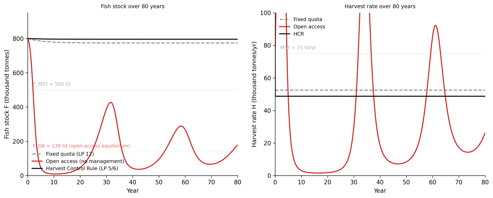

Where to change a system — and why the obvious place is usually wrong
9.1 The puzzle
The Grand Banks off Newfoundland supported one of the most productive marine fisheries in recorded history. John Cabot’s 1497 expedition reported that the sea could barely be crossed for the density of cod. By the 1960s, the annual harvest was still 250,000 tonnes. By 1992, the Canadian government declared an indefinite moratorium: the cod stock had collapsed to below 1% of its 1960s level (Hutchings and Myers 1994). Thirty thousand jobs vanished in a single season. The fishery has not meaningfully recovered in more than thirty years.
The puzzle is what did not cause the collapse. There was no fraud, no regulatory capture, no willful irrationality. Biologists assessed the stock annually using scientifically defensible methods. Regulators set quotas based on those assessments. Fishing industry representatives lobbied for higher quotas, as any economic actor in their position would. Politicians balanced conservation objectives against the economic survival of coastal communities, as politicians in parliamentary democracies are expected to do. Fishers fished to the quota.
The management system did exactly what it was designed to do. The fishery collapsed anyway.
The explanation requires looking at the feedback structure, not the actors. Annual stock assessments fed into annual quota-setting processes, but the quota-setting process was subject to economic and political pressure that consistently produced quotas above what biologists recommended. The stock declined. Higher prices per tonne — the scarcity premium — increased the economic incentive to fish. More effort was deployed. The stock declined further. The management system was in a reinforcing loop with the economic system: each year’s decline made the economic pressure for higher quotas stronger, not weaker. The balancing loop that should have corrected the stock — lower quotas in response to declining surveys — was consistently overwhelmed by the reinforcing loop of economic pressure. The management system was trying to balance a loop that it had no structural mechanism to close.
The quota was the intervention. It targeted the harvest rate — a number, a parameter. It did not address the economic feedback that drove the quota-setting process. It did not change the information structure — who got the stock assessment, when, and how it was used in the decision process. It did not change the rules about who had standing to override scientific recommendations. It did not change the goal of the management system, which was implicitly oriented toward maintaining fishing industry income rather than maintaining the fish stock. Each year, the intervention was applied at the least effective place in the system, while the most effective places remained untouched.
This is the subject of the chapter. Not what to change — but where.
9.2 Why interventions fail
Three mechanisms account for most intervention failures. They are not accidents or the result of bad actors. They are structural properties of complex systems that any intervention must contend with.
Policy resistance. Every balancing loop in a system has a goal. Interventions that adjust outputs without changing goals or feedback structures are corrected by those loops. The annual cod quota was a balancing loop trying to hold harvest below a threshold; the economic system contained a reinforcing loop that generated pressure to raise the threshold each year. The quota was resisted not because anyone was behaving illegally, but because the economic incentives were intact and operating as designed.
The same mechanism appears at every scale. Raising the minimum wage without changing the labour market structure or the goal of profit maximisation is resisted by employment adjustments, automation, and relocation of production — the balancing loops of the competitive economy correcting for a parameter change. The intervention is real; the resistance is real; the long-run effect is smaller than the short-run effect and may be opposite in sign.
Counterintuitive behaviour. The most obvious intervention often makes the problem worse. In Forrester (1969), building more low-income housing in declining industrial cities attracted low-income migrants but did not create the jobs or services they needed — worsening the fiscal and social conditions that had made those cities declining in the first place. The counterintuitive result was not a paradox; it was a predictable consequence of reinforcing loops that the intervention strengthened rather than weakened. The intervention looked right from inside a small boundary. From outside the boundary — where the feedback connections were visible — it was wrong.
Fixes that fail. The system archetype from Chapter 2: a symptomatic fix provides short-term relief while allowing the underlying structural problem to worsen. Annual quota adjustments in the Grand Banks were a fix that failed. Each adjustment provided short-term relief to the fishing industry while the underlying structural problem — the reinforcing loop of economic pressure — continued operating. The fix delayed the confrontation with the structural problem; by delaying it, made it more severe when it finally arrived. Thirty years of quota negotiation bought time at the cost of the recovery capacity that would have allowed a gradual transition to sustainable management.
Figure 8.1. The Grand Banks feedback structure. The dominant loop (solid arrows) is reinforcing: more effort → more catch → lower stock → higher price → higher revenue → more effort. The quota (dashed box) was intended as a balancing intervention on the catch flow. But the quota-setting process was itself inside the reinforcing loop — revenue drove political pressure to raise the quota. The intervention targeted the flow without closing the loop that determined the flow’s ceiling.
The pattern is consistent across domains. A data team monitors model accuracy and lowers the decision threshold when accuracy falls below a target — a LP 12 adjustment. The model continues to drift. A threshold adjustment is a symptomatic fix if the underlying cause (distribution shift in the input data) is not addressed. The fix works until it doesn’t, and the underlying drift has continued the entire time the fix appeared to be working.
9.3 The leverage point hierarchy
In 1999, Meadows (1999) published an essay that has become one of the most-cited pieces in systems thinking: “Leverage Points: Places to Intervene in a System.” The argument is that some places in a system are much more sensitive to intervention than others, and that the places most sensitive to intervention are not where we instinctively look.
Meadows identified twelve leverage points, numbered from least effective (12) to most effective (1). They form four natural groups.
flowchart TD
subgraph P4["Group 4 — Paradigm · hardest to change, highest leverage"]
LP1["1 · Power to transcend paradigms"]
LP2["2 · Mindset / paradigm of the system"]
end
subgraph P3["Group 3 — Goals and structure"]
LP3["3 · Goals of the system"]
LP4["4 · Power to self-organise"]
end
subgraph P2["Group 2 — Feedback and information · designed, medium leverage"]
LP5["5 · Rules: incentives, constraints"]
LP6["6 · Information structure"]
LP7["7 · Gain of reinforcing loops"]
LP8["8 · Strength of balancing loops"]
end
subgraph P1["Group 1 — Physical structure · easiest to change, lowest leverage"]
LP9["9 · Lengths of delays"]
LP10["10 · Structure of material flows"]
LP11["11 · Sizes of buffer stocks"]
LP12["12 · Numbers: constants, parameters, taxes"]
end
P4 ~~~ P3 ~~~ P2 ~~~ P1
style P4 fill:#fff3f3,stroke:#d52a2a,stroke-width:1.5px
style P3 fill:#fff8f0,stroke:#888888,stroke-width:1.5px
style P2 fill:#f8f8ff,stroke:#888888,stroke-width:1.5px
style P1 fill:#f5f5f5,stroke:#111111,stroke-width:1.5px
Figure 8.2. Meadows’ twelve leverage points grouped into four tiers. Leverage increases from bottom to top. Physical structure is expensive to change but low-leverage; paradigm is nearly impossible to change but, when it shifts, everything changes with it. Most policy interventions target Group 1. Most durable institutional changes target Groups 2 and 3.
Group 1 — Physical structure (LP 9–12): lowest leverage.
LP 12: Numbers — constants, parameters, subsidies, taxes, standards. The most common intervention target. Adjusting the quota, changing the interest rate, setting a carbon tax. These matter — a poorly set number can cause real damage — but they rarely change the qualitative behaviour of a system. The system is the same system with a different knob setting. Quotas, price ceilings, penalty rates: all LP 12.
LP 11: Buffer stocks, relative to flows. The size of a buffer determines how long a system can absorb shocks before a stock hits a limit. Larger grain reserves make food supply more stable. Larger cash reserves make banks less fragile. Buffer sizes are expensive and slow to change — this is physical infrastructure — but larger buffers genuinely reduce system fragility.
LP 10: Structure of material flows. The transportation network, the age structure of a population, the routing of the electricity grid. These determine what flows are physically possible. Building a new rail corridor creates a flow path that did not exist before, which can fundamentally change the economic geography of the region. But infrastructure takes decades to build and decades to remove.
LP 9: Lengths of delays. As established in Chapters 2 and 7: delays are load-bearing. They produce oscillation, overshoot, and policy resistance. Reducing the delay between stock depletion and management response — faster stock assessments, more frequent quota reviews — reduces the amplitude of the oscillation. Delays are changeable with engineering investment; this is why Chapter 7’s supply chain finding (halving the delay reduces oscillation more than proportionally) is an actionable result.
Group 2 — Feedback and information (LP 6–8): medium leverage.
LP 8: Strength of negative feedback loops. Balancing loops are what keep systems at their goals. A well-designed balancing loop — fast, accurate, proportionate — is more effective at maintaining a stock near its goal than a poorly designed one. Strengthening a weak balancing loop (adding sensors, improving actuation, reducing detection latency) is higher leverage than adjusting the setpoint. Habitat restoration as a fisheries tool strengthens the biological reproduction loop; it is higher leverage than adjusting the annual quota.
LP 7: Gain around reinforcing loops. Reducing the gain of a runaway reinforcing loop is high leverage. Fossil fuel subsidies reduce the cost of extraction, which increases the return on extraction investment, which increases extraction capacity, which reduces fuel costs further. Removing those subsidies attacks the gain on the reinforcing loop — a higher-leverage intervention than taxing the output, which leaves the loop intact.
LP 6: Structure of information flows — who has access to what, and when. This is the most accessible high-leverage point and the most overlooked. Most systems failures involve agents making decisions without access to the information that would change their decisions. The annual cod stock assessment was available — but it was not embedded in the quota-setting process in a way that constrained the result. A structural change: make each fishing vessel’s legal quota a direct function of the current stock assessment, updated in real time. Every fisher’s quota automatically falls as the stock falls, without requiring an annual negotiation. The economic incentive is now aligned with the ecological reality. This is LP 6: changing the structure of information flows, not the value of any parameter.
LP 5: Rules — incentives, punishments, constraints. Rules change the behaviour of every agent simultaneously. Individual Transferable Quotas (ITQs) in fisheries are a rule change: they create a property right in the fish stock that gives every fisher an economic incentive to conserve it, because their quota’s value is tied to the stock’s health. The Icelandic fishery has operated under ITQs since 1984 and has maintained sustainable harvests of cod and other groundfish since the 1990s (Arnason 1993). The Grand Banks, under annual quota negotiation, collapsed. The biological conditions were similar. The rules were not.
Group 3 — Goals and self-organisation (LP 3–4): high leverage, hard to access.
LP 4: Power to add, change, evolve, or self-organise system structure. The ability to change the feedback structure itself — not setting a quota, not changing the rules about quotas, but changing what kinds of management institutions are possible. A common property regime, a tradeable rights system, a public trust framework — these are different structural possibilities, and choosing between them is LP 4. Institutional design is LP 4.
LP 3: Goals of the system. The purpose of the system as embedded in a larger context. What is the fishery management system for? If the goal is “maintain fishing industry income,” every part of the management apparatus is oriented toward that goal — and it will be achieved at the expense of the fish stock. If the goal is “maintain the marine ecosystem at a level that supports sustainable harvesting for the next century,” the management apparatus must be redesigned to serve that goal. Goal changes are high leverage because they reorient everything downstream of them. They are hard to achieve because the actors in the system benefit from the current goal.
Group 4 — Paradigm (LP 1–2): transcendent, very rare.
LP 2: Mindset or paradigm. The shared ideas and assumptions from which the system arises. “Fisheries are a commons to be maximally exploited before someone else does” is a paradigm. “Fisheries are ecosystems we are embedded in and responsible for maintaining” is a different paradigm. The transition between them is not achieved by adjusting a quota. It is achieved through persistent evidence, institutional crisis, and cultural leadership — and it is the precondition for the LP 3 goal change that makes sustainable management politically possible.
LP 1: The power to transcend paradigms. Meadows’ own formulation: the recognition that no paradigm is final, that any can be wrong, that intellectual humility is itself a structural property of good governance. In practice: the institutional capacity to run controlled experiments, admit failure publicly, and change course. In data systems: treating model assumptions as hypotheses to be tested rather than foundations to be defended.
9.4 Leverage points applied
The leverage point hierarchy is not abstract. At any given system, every leverage point has a concrete form. Three systems — climate, opioids, ML fairness — illustrate what interventions at different levels look like and why some are more durable than others.
Climate policy.
The behaviour of concern: atmospheric CO₂ continues to rise at approximately 2.4 ppm per year. The reinforcing loop: fossil fuel infrastructure generates returns that are invested in more infrastructure. The balancing loops that should correct this — the price signal, the regulatory environment — have been consistently slower than the reinforcing loop.
LP 12: Carbon tax. Adjusts the price of carbon. Reduces demand at the margin; resisted by competitiveness concerns and international free-rider dynamics. Works while in force; reversed by electoral change. The Grand Banks equivalent: adjusting a number while the reinforcing loop continues.
LP 9: Permitting delays. Reducing the construction lag for renewable energy projects — faster permitting, streamlined interconnection — shortens the delay between investment decision and installed capacity. The bullwhip analysis from Chapter 7 applies: a shorter delay means the clean energy supply loop responds faster to demand signals. High value per regulatory dollar spent.
LP 6: Lifecycle carbon accounting. Embedding lifecycle emissions in product prices — labelling, mandatory disclosure, import adjustments — changes the information available to every buyer and producer simultaneously. No mandate is required; the information changes economic decisions across the entire economy. High leverage because the information change operates through existing economic feedback structures rather than fighting them.
LP 5: Fossil fuel subsidy removal. Changes the rules that make fossil fuel extraction artificially competitive. More durable than a carbon tax because it removes a structural support for the reinforcing loop rather than adding a friction to its output. Politically harder than LP 12; substantially more durable.
LP 3: Net zero as a legal obligation. A goal change: making atmospheric stabilisation a legal constraint on national economic management rather than an aspirational policy target. The Paris Agreement is a partial LP 3 change — it establishes the goal but leaves the rules for achievement to national governments. Full LP 3 requires the goal to be embedded in a structure that constrains the lower-level interventions, not merely alongside them.
Opioid epidemic.
The behaviour of concern: opioid overdose deaths rose from approximately 8,000 per year in 1999 to more than 80,000 per year by 2021 in the United States, driven by sequential demand shifts from prescription pills to heroin to illicit fentanyl. Each supply-side restriction produced demand substitution to a more dangerous substance.
LP 12: Supply restriction. DEA scheduling changes, prescriber limits. The system responded by shifting demand to less-regulated substitutes. Classic policy resistance: the balancing loop (restriction reduces available drug) was overcome by the reinforcing loop (unmet demand finds substitutes). The intervention was correct in its own logic and wrong in its structural understanding.
LP 9: Naloxone distribution. Rapid naloxone deployment shortens the delay between overdose and death. Not a structural fix — it does not address the addiction loop — but it buys time and reduces mortality while structural changes are developed. High value at low cost.
LP 6: Drug checking services and fentanyl test strips. Change the information available to users at the point of decision. High leverage relative to cost because the information change operates through the existing behaviour of users rather than against it. Contested because the paradigm (LP 2) in much policy is that harm reduction legitimises drug use — the paradigm debate blocks a structural information intervention.
LP 5: Treatment-on-demand law; removal of prior authorisation for addiction medication. Changes the rules that determine access to evidence-based treatment. The same economic actor (an insured patient) makes a different decision when treatment is accessible without a six-week prior authorisation delay. Rule changes are durable; they operate regardless of which government is in power.
LP 3: Harm reduction as the goal. The treatment goal for most of the crisis period was “abstinence.” Harm reduction — keeping people alive long enough to reach recovery, regardless of current use status — is a different goal. Redefining the goal of the healthcare system in this domain enables a completely different set of interventions, many of which were blocked specifically because they were inconsistent with the abstinence goal.
ML fairness.
The behaviour of concern: a loan approval model produces disparate outcomes across demographic groups that cannot be fully explained by creditworthiness factors.
LP 12: Threshold adjustment. Set different decision thresholds by group to equalise approval rates. Immediately implementable. Resisted because it requires explicit demographic classification, may conflict with legal definitions of equal treatment, and does not address the training data problem that produced the disparity. Fixes the output; leaves the cause intact.
LP 10: Feature removal. Remove features that are proxies for protected characteristics — postal codes that correlate with race, names that correlate with ethnicity. Changes the material flow of information into the model. More structural than LP 12 but incomplete: the model may recover proxies through correlations with remaining features.
LP 6: Mandatory explainability. Require the model to produce auditable explanations for each decision. Changes the information available to the applicant, to the institution, and to regulators. Enables targeted challenge of specific decisions rather than statistical audit of aggregate outcomes.
LP 5: Algorithmic audit requirements; fairness certification. Changes the rules under which the model may be deployed. Creates an external enforcement mechanism that operates even when internal incentives favour the biased outcome.
LP 3: Objective function redesign. Redefine the optimisation target from “minimise default rate” to “minimise default rate subject to demographic parity constraint.” Requires the goal of the model to change — which requires the goal of the institution to change. The most durable intervention: the model is now structurally oriented toward the outcome the regulation requires, rather than fighting against a constraint at every inference step.
Resource management and the leverage point hierarchy
The leverage point analysis applied in this section maps directly to the policy instruments examined in WH Computational Geography Parts 3 (Land Use and Policy) and 5 (Economic Systems). Those chapters provide empirical case studies with spatial data — fisheries, forestry, water allocation, urban land use — for the systems analysed conceptually here. The framework in this chapter provides the structural rationale for why some policy instruments are durable across political cycles and others are not. The Computational Geography chapters provide the domain specifics and the data. The two are designed to be read in conjunction.
flowchart LR
subgraph SYS["System structure (unchanged across interventions)"]
direction LR
STOCK2["Stock"]
LOOP["Reinforcing\nloop"]
OUT["Undesirable\noutput"]
STOCK2 -->|"drives"| LOOP
LOOP -->|"amplifies"| STOCK2
STOCK2 -->|"produces"| OUT
end
INT12["LP 12\nAdjust output\n(quota, tax, threshold)"]
INT6["LP 6\nChange information\nstructure (what feeds\nthe decision)"]
INT3["LP 3\nChange goal\n(what the system\nis trying to achieve)"]
INT12 -->|"corrects output\nweakly"| OUT
INT6 -->|"changes what\ndrives the loop"| LOOP
INT3 -->|"reorients\neverything"| SYS
style INT12 fill:#f5f5f5,stroke:#888888,stroke-width:1.5px
style INT6 fill:#f5f5f5,stroke:#888888,stroke-width:1.5px
style INT3 fill:#fff3f3,stroke:#d52a2a,stroke-width:1.5px
style SYS fill:#f8f8f8,stroke:#111111,stroke-width:1.5px
Figure 8.3. Three interventions at different leverage points on the same system. LP 12 targets the output (quota, tax, threshold) — the system structure continues to generate the output. LP 6 targets the information flow that drives the loop — the loop now responds to different inputs. LP 3 targets the goal — the entire system reorients. The structural change required increases from left to right; so does the durability of the effect.
9.5 Unintended consequences
Unintended consequences are not random. They are the predictable outputs of the unchanged system structure that the intervention did not touch. The parts of the system the intervention targeted have been adjusted; the parts it did not target continue to operate, and they produce effects that were not part of the intervention’s logic.
The cobra effect. British colonial administration in India offered bounties for dead cobras to reduce the snake population (Meadows 2008). Enterprising citizens began breeding cobras for the bounty. When the programme was cancelled, breeders released their now-worthless stock into the environment. The cobra population increased. The LP 12 intervention (the bounty — a number) created a new reinforcing loop that the policy was designed without modelling: profit from breeding → more cobras → more bounty revenue → more breeding. The unintended consequence was predictable once the loop was visible. The policy was designed without drawing the system boundary wide enough to include the behavioural response of actors with economic interests.
Jevons paradox. In 1865, Jevons (1865) observed that more efficient steam engines, rather than reducing coal consumption, dramatically increased it: lower cost per unit of work made coal-powered machinery economically attractive for a far wider range of applications. The same pattern has appeared in every major energy efficiency improvement since: more fuel-efficient cars → more driving; more efficient building HVAC → larger buildings, more intensive climate control; more efficient data centres → more workloads per rack, more total computation. LP 12 efficiency standards are consistently undermined by the reinforcing loop at LP 7: cheaper energy services → more energy-using applications → more energy demand. The paradox is a direct consequence of intervening at LP 12 (the efficiency standard) without addressing the gain on the reinforcing loop at LP 7.
Goodhart’s Law(Goodhart 1975). Any metric used as a target will be optimised — but optimisation of the metric and optimisation of the underlying reality the metric was designed to measure are only the same thing when there is no feedback between the metric and the decision-making process. In production ML systems, there is always feedback. A model accuracy score used as a team performance metric will be optimised through threshold adjustment, test set selection, or evaluation data filtering — not necessarily through improving the model. This is LP 12 failure in measurement systems: intervening at the number while leaving intact the incentive structure that determines how the number is produced creates a new reinforcing loop (optimise the metric → metric improves → measured “success” → continued metric optimisation) that severs the connection between the measure and what it was supposed to measure. The structural fix is LP 5 or LP 6: change the rules for how performance is evaluated, or change the information structure so that decision-makers cannot directly observe and optimise the specific metric they are assessed on.
The pattern is consistent: LP 12 interventions produce unintended consequences that are discoverable from the unchanged system structure. LP 5 and LP 6 interventions produce less predictable consequences because they activate feedback loops that were previously dormant. This is not an argument against high-leverage intervention — it is an argument for careful monitoring when high-leverage intervention is used, and for building adaptation pathways into the intervention design from the start.
Bifurcation points and intervention design
The tipping points from Chapter 3 and the stability thresholds from Chapter 7 appear in a unified mathematical framework in WH Maths Vol 8, Ch 3 (Bifurcation Theory). Near a bifurcation point, LP 12 interventions — parameter changes — can have qualitatively discontinuous effects: a small change in a parameter can push the system across a stability boundary, producing an outcome completely out of proportion to the intervention. The fishery model in this chapter exhibits exactly this structure. Near the depletion threshold, a small change in the quota produces a qualitatively different long-run outcome (collapse vs. recovery). Formal bifurcation analysis identifies these danger zones before intervention, providing a mathematical foundation for the caution recommended in this section: near a tipping point, the leverage point hierarchy matters more, not less.
9.6 Principles for effective intervention
The eight chapters of this book have built a vocabulary for reasoning about systems. Stocks and flows, feedback loops, delays, tipping points, emergence, modelling methodology, leverage points. This section applies that vocabulary to five durable principles for effective intervention — the synthesis of what the vocabulary is for.
1. Intervene at the highest leverage point you can access.
LP 12 is the most accessible leverage point. LP 3 is the most effective. The gap between accessible and effective is where most policy failure lives. The task is not to intervene only at LP 1 or LP 2 — those are rarely within reach. The task is to identify the highest leverage point accessible to the intervention, understand why it is the highest accessible, and resist the institutional pressure to settle for LP 12 because it requires the least structural change to implement.
The Grand Banks did not need a LP 2 paradigm shift to be managed sustainably. It needed LP 5: a rule change that aligned individual fisher incentives with long-run stock health. That rule change was politically available in the 1980s — Iceland implemented it — and was not pursued in Canada. The failure was not a failure of imagination. It was a failure to apply the available leverage.
2. Structural changes are more durable than parameter adjustments.
A rule that automatically adjusts a flow in response to a stock level (LP 6: information structure) continues to work even when conditions change, because the rule responds to what the system is actually doing rather than to what someone estimated it was doing at the time the parameter was set. A quota set at a single number (LP 12) requires re-setting every year by a committee under economic pressure. The Grand Banks and the Icelandic fishery received nearly identical biological pressures over the same period. The Icelandic fishery survived because its management rules were structural (ITQs that automatically gave each fisher a stake in the stock’s health). The Grand Banks was managed through annual parametric negotiation.
3. Expect and monitor for adaptation.
Systems respond to interventions. The response is not random — it follows the feedback structure of the system. Draw the likely adaptation paths before deploying an intervention, and build monitoring for those specific pathways from the start. The cobra effect is not a surprise to someone who modelled the system before implementing the bounty. It is only a surprise to someone who treated the intervention as operating on a passive system rather than an adaptive one.
Adaptation monitoring is especially important for LP 5 and LP 6 interventions, where the rule or information structure change activates feedback loops that were not operating before the intervention. These loops are not always in the intended direction. ITQ systems in fisheries have produced quota concentration — large fishing companies buying out small operators — a consequence that was predictable from the economic model of tradeable property rights but was not uniformly anticipated in early implementations.
4. Match intervention timescale to system response time.
An intervention that operates on a short timescale in a system with long delays will be evaluated on its short-term effect and abandoned before its long-run effect is visible. Urban reforestation: costs are immediate; benefits in urban temperature and stormwater management accumulate over decades. If the policy evaluation window is three years, the intervention will consistently appear to fail. The delay mismatch from Chapter 2 applies to policy evaluation as much as to feedback control. Designing an intervention without specifying the timescale on which its effect should be evaluated is a design failure, not an administrative oversight.
5. Model before intervening.
Chapter 7 showed how to build the minimum model that captures the load-bearing feedback structure of a system. That model, run before the intervention is deployed, reveals: which leverage point the proposed intervention is actually targeting; what adaptation pathways are structurally predictable; what feedback loops may be strengthened as side effects; and whether the quantitative claim behind the intervention (this quota level is sustainable; this threshold is appropriate; this tax rate will reduce emissions by X%) is consistent with the feedback structure or only with a static calculation that ignores the dynamics.
The model does not need to be precise. It needs to have the right structure. A rough model of the right system is more useful than no model. The Grand Banks failure was not a failure of data. The stock assessments were conducted and the numbers were available. It was a failure to model the economic feedback loop that connected the assessment output to the quota-setting process — a feedback that, once modelled, predicts the collapse without requiring any special knowledge about cod biology.
Closing the book.
Systems thinking is not a panacea. It does not guarantee that the right intervention will be chosen, implemented, or sustained. It does not remove the political difficulty of high-leverage change. What it provides is structural clarity: a vocabulary for identifying the mechanisms at work in a system, the feedback loops that are driving behaviour, the leverage points that are most sensitive to change, and the likely consequences of intervening at each.
The vocabulary built across these eight chapters — stocks, flows, feedback, delays, tipping points, emergence, modelling methodology — is a set of tools for asking more precise questions about systems that are already being managed or intervened in. Every fishery, every urban housing market, every ML pipeline is already being managed by someone. The question is not whether to intervene. It is whether the intervention is targeted at a place in the system where it can do durable work.
Technical debt as a managed stock
The fishery management framework translates directly to software engineering. Codebase health is a stock — it accumulates through good engineering practices and depletes through shortcuts, accumulated dependencies, and deferred refactoring. The economic feedback is identical to the Grand Banks: short-term delivery pressure drives high-rate depletion; under open-access conditions (no management rule), the codebase depletes toward dysfunction. The LP 5 intervention is structural: a definition-of-done policy that caps the rate of technical debt accumulation relative to estimated repayment capacity. The LP 3 intervention is a goal change: treating codebase health as a first-class engineering output, not a residual after feature delivery. Velocity today and codebase health tomorrow are the same trade-off as harvest this year and stock next year.
The Gordon-Schaefer model (Gordon 1954; Schaefer 1954) is the standard economic model of a fishery. A fish population grows logistically — fast near zero, near zero at carrying capacity — and is harvested at a rate determined by fishing effort and the current stock size. Fishing effort is driven by profit: effort expands when fishing is profitable and contracts when it is not. The model has been used to analyse every major commercial fishery in the world.
Three scenarios demonstrate the leverage point hierarchy in action. All three use the same fish population dynamics and the same economic incentive structure (effort grows with profit). They differ only in the management rule applied.
Code
"""Fishery management — Chapter 8.Gordon-Schaefer model with economic effort dynamics.Three scenarios: fixed quota (LP 12), open access (no management), Harvest Control Rule (LP 6/5).Demonstrates the leverage point hierarchy: the same economic incentives produce differentlong-run outcomes depending on which structural intervention is applied."""import numpy as npimport matplotlib.pyplot as plt# -- Named constants -----------------------------------------------------------R =0.30# intrinsic growth rate (yr⁻¹)K =1000.0# carrying capacity (thousand tonnes)Q =0.0012# catchability coefficientPRICE =3.0# normalised revenue per unit harvestUNIT_C =0.50# normalised cost per unit effortPHI =0.50# effort adjustment speedF_0 =800.0# initial stock (thousand tonnes)E_0 =80.0# initial effort (normalised)T_END =80.0# simulation length (years)DT =0.05# Euler time step (years)MSY = R * K /4# = 75.0 thousand tonnes/yrF_MSY = K /2# = 500.0 thousand tonnesF_OA = UNIT_C / (PRICE * Q) # open-access equilibrium F = 139 GtH_FIXED =0.70* MSY # = 52.5 (fixed sustainable quota, Scenario 1)# Harvest Control Rule parameters (Scenario 3)HCR_HMAX =0.65* MSY # = 48.75 — maximum harvest under HCRHCR_FTGT =500.0# target stock (= F_MSY)HCR_FFLR =150.0# minimum stock threshold (below this: zero harvest)COL_FIXED ="#888888"COL_OPEN ="#d52a2a"COL_HCR ="#111111"STEPS =int(T_END / DT)T = np.arange(STEPS) * DTdef hcr(F):"""Harvest Control Rule: linearly reduces quota as stock falls below target."""if F >= HCR_FTGT:return HCR_HMAXelif F >= HCR_FFLR:return HCR_HMAX * (F - HCR_FFLR) / (HCR_FTGT - HCR_FFLR)else:return0.0def run_fishery(scenario):""" Simulate the fishery under one management regime. scenario 1 — Fixed quota: H = H_FIXED (no effort dynamics). scenario 2 — Open access: effort driven by profit, no harvest cap. scenario 3 — HCR: effort driven by profit, harvest capped by hcr(F). Returns (rec_F, rec_H): fish stock and harvest rate arrays. """ F, E = F_0, E_0 rec_F = np.empty(STEPS); rec_F[0] = F rec_H = np.empty(STEPS); rec_H[0] = Q * E * F if scenario >1else H_FIXEDfor i inrange(1, STEPS): growth = R * F * (1.0- F / K)if scenario ==1: H = H_FIXED dE =0.0elif scenario ==2: H = Q * E * F dE = PHI * E * (PRICE * Q * F - UNIT_C)else: # scenario 3 H =min(Q * E * F, hcr(F)) dE = PHI * E * (PRICE * Q * F - UNIT_C) F =max(0.0, F + (growth - H) * DT) E =max(0.0, E + dE * DT) rec_F[i] = F rec_H[i] = Hreturn rec_F, rec_H# -- Run all three scenarios ---------------------------------------------------F1, H1 = run_fishery(1)F2, H2 = run_fishery(2)F3, H3 = run_fishery(3)# -- Figure --------------------------------------------------------------------fig, (ax_f, ax_h) = plt.subplots(1, 2, figsize=(12, 5), dpi=150)# Left panel: fish stockax_f.axhline(F_MSY, color="#cccccc", linewidth=0.8, linestyle=":", zorder=0)ax_f.axhline(F_OA, color="#ffcccc", linewidth=0.8, linestyle=":", zorder=0)ax_f.annotate(f"F_MSY = {F_MSY:.0f} Gt", xy=(2, F_MSY), xytext=(2, F_MSY +18), fontsize=8, color="#aaaaaa", va="bottom")ax_f.annotate(f"F_OA = {F_OA:.0f} Gt (open-access equilibrium)", xy=(2, F_OA), xytext=(2, F_OA +18), fontsize=8, color="#d52a2a", va="bottom", alpha=0.7)ax_f.plot(T, F1, color=COL_FIXED, linewidth=1.6, linestyle="--", label="Fixed quota (LP 12)")ax_f.plot(T, F2, color=COL_OPEN, linewidth=1.8, linestyle="-", label="Open access (no management)")ax_f.plot(T, F3, color=COL_HCR, linewidth=1.8, linestyle="-", label="Harvest Control Rule (LP 5/6)")ax_f.set_xlabel("Year")ax_f.set_ylabel("Fish stock F (thousand tonnes)")ax_f.set_xlim(0, T_END)ax_f.set_ylim(0, 950)ax_f.set_title("Fish stock over 80 years", fontsize=9, pad=8)ax_f.legend(fontsize=8.5, frameon=False, loc="lower left")ax_f.spines["top"].set_visible(False)ax_f.spines["right"].set_visible(False)# Right panel: harvest rateax_h.axhline(MSY, color="#cccccc", linewidth=0.8, linestyle=":", zorder=0)ax_h.annotate(f"MSY = {MSY:.0f} Gt/yr", xy=(2, MSY), xytext=(2, MSY +2), fontsize=8, color="#aaaaaa", va="bottom")ax_h.plot(T, H1, color=COL_FIXED, linewidth=1.6, linestyle="--", label="Fixed quota")ax_h.plot(T, H2, color=COL_OPEN, linewidth=1.8, linestyle="-", label="Open access")ax_h.plot(T, H3, color=COL_HCR, linewidth=1.8, linestyle="-", label="HCR")ax_h.set_xlabel("Year")ax_h.set_ylabel("Harvest rate H (thousand tonnes/yr)")ax_h.set_xlim(0, T_END)ax_h.set_ylim(0, 100)ax_h.set_title("Harvest rate over 80 years", fontsize=9, pad=8)ax_h.legend(fontsize=8.5, frameon=False)ax_h.spines["top"].set_visible(False)ax_h.spines["right"].set_visible(False)plt.tight_layout(pad=1.8)plt.savefig("_assets/ch08-fishery-management.png", dpi=150, bbox_inches="tight")plt.show()

Figure 9.1: Figure 8.4. Fishery management under three regimes, 80-year simulation. Left: fish stock F(t). The open-access scenario (red) depletes the stock to the open-access equilibrium (F_OA = 139 Gt — 14% of carrying capacity) as effort expands to exhaust profit. The fixed quota (grey dashed) maintains the stock near 774 Gt when correctly set, but has no self-correcting mechanism if conditions change. The Harvest Control Rule (black) holds the stock near F_MSY = 500 Gt through an automatic feedback that reduces the harvest cap as stock falls. Right: harvest rate H(t). The open-access harvest overshoots and then falls as the stock collapses. The HCR harvest is lower and self-correcting.
What to try
Add an Allee effect. Below a minimum viable population, fish cannot find mates and effective growth rate falls. Modify the growth term: r_eff = R * max(0, (F - F_min) / (K/2 - F_min)) for F < K/2, where F_min = 100 Gt. This is the depensation effect that produced the actual Grand Banks collapse to near zero (not just to the open-access equilibrium). Under what conditions does the open-access scenario now produce true stock collapse rather than stabilisation at F_OA? How does this change the design requirements for the Harvest Control Rule?
Raise the fishing effort adjustment speed. Increase PHI from 0.50 to 2.0. How does this affect the open-access trajectory and the HCR scenario? Faster effort adjustment means the economic feedback operates faster than the biological feedback — the same delay mismatch from Chapter 2. Does the HCR remain effective, or does high PHI require a different HCR design?
Model a technology shock. At year 20, halve UNIT_C (fishing technology improves, cutting costs). How does this change the open-access equilibrium F_OA? Does the HCR automatically compensate for the technology shock, or does it need recalibration? This tests the structural durability of the LP 6 intervention: does the rule continue to work when the underlying economic conditions change?
The simulation makes the leverage point argument precise. All three scenarios use the same fish population dynamics and the same economic incentive structure (effort grows when profitable). What differs is only the management rule. The fixed quota works when correctly set but fails under pressure (no self-correcting mechanism). The open-access scenario depletes the stock to its economically minimal level. The HCR maintains the stock near the biological optimum through a structural feedback that automatically reduces the harvest cap as the stock falls.
The HCR is not a better number. It is a different structure. The same economic actors, the same biological system, the same profit incentives — different rules, different outcome. The stock is maintained not because anyone is choosing to conserve it, but because the rule makes conservation the individually rational choice.
9.8 Exercises
8.1 — System identification. A farming region draws groundwater from a shared aquifer for irrigation. When water prices are low and crop prices are high, irrigation intensity increases. As the aquifer depletes, pumping depths increase — but technology improvements have consistently reduced pumping costs faster than depletion increases them. (a) Draw the causal loop diagram. Identify all feedback loops. (b) Which leverage point is the technology improvement inadvertently operating at, and why is it making the depletion problem worse rather than better? (c) What would a leverage point 6 intervention look like in this context — specifically, what information structure change would alter individual farming decisions without requiring a government mandate?
8.2 — Archetype recognition. The Aral Sea, once the world’s fourth-largest lake, lost 90% of its volume between 1960 and 2000 due to Soviet-era irrigation diversion of the rivers feeding it. The diversion was a deliberate intervention to expand cotton production. (a) At what leverage point was the diversion applied? (b) What higher-leverage intervention might have produced a different long-run outcome? (c) The Aral Sea has partially recovered in its northern section following a Kazakh government dam project. At what leverage point does this intervention operate? Is it more or less durable than the original diversion? Justify your answer using the model structure.
8.3 — Simulation build. Add an Allee effect to the fishery simulation from Section 6 as described in the “What to try” callout. Run all three management scenarios. (a) Under what combination of PHI and UNIT_C does the open-access scenario produce true stock collapse to zero (versus stabilisation at F_OA)? (b) Modify the HCR to set HCR_FFLR = 200 (higher minimum threshold). Does this prevent collapse in the scenarios where the standard HCR fails? (c) What does this imply about the design requirements for a Harvest Control Rule in a stock that has depensation dynamics? How would you determine F_floor empirically?
8.4 — Leverage point analysis. A major city has experienced median house price growth of 8% per year for fifteen years. The government has implemented: (a) a buyers’ subsidy programme, (b) a stamp duty reduction for first-home buyers, (c) a foreign buyer tax, (d) an inclusionary zoning requirement (new developments must include a minimum percentage of affordable units). Classify each intervention on the leverage point hierarchy. For each, predict the most likely unintended consequence from the system structure. Describe what a leverage point 4 intervention would require, and explain why it is politically harder to achieve than the interventions in (a)–(d).
8.5 — Leverage point analysis. A social media platform’s engagement algorithm optimises for click-through rate. A government regulator requires the platform to reduce hate speech, measured by a content classifier. The platform implements: (a) a minimum confidence threshold for the classifier, (b) a shadow-banning policy for borderline content, (c) a human review queue for flagged appeals, (d) a change to the objective function: the algorithm now penalises engagement with content the classifier flags above 0.4 confidence. Classify each intervention. For interventions (a)–(c), predict the adaptation pathway — how will the platform and its users respond in a way that undermines the intervention? For intervention (d), identify at what leverage point it operates and what residual vulnerability remains.
8.6 — Capstone. You have been asked to advise on the management of a Pacific salmon fishery exhibiting the following behaviour: a 20-year cycle of boom (high catches) and bust (near-zero catches), attributed to a combination of ocean temperature cycles, predator dynamics, and fishing pressure. (a) Draw the full causal loop diagram including at least four feedback loops. Label each loop reinforcing or balancing and estimate its approximate timescale. (b) Identify the two most important stocks, their time constants, and the dominant feedback loop in each phase of the cycle. (c) Write the differential equations for the two most important stocks. (d) Apply the leverage point hierarchy: propose three interventions at LP 12, LP 6, and LP 3 respectively. For each, predict the most likely unintended consequence and the timescale over which it would manifest. Recommend which to implement first and why. (e) Describe the minimum model you would build before recommending any intervention — what stocks, what flows, what feedback loops — and specify the structural validation test you would apply to ensure the model captures the load-bearing dynamics before it informs management decisions.
9.9 References
Arnason, Ragnar. 1993. “The Icelandic Individual Transferable Quota System: A Descriptive Account.”Marine Resource Economics 8 (3): 201–18. https://doi.org/10.1086/mre.8.3.42629275.
Forrester, Jay W. 1969. Urban Dynamics. MIT Press.
Goodhart, Charles A. E. 1975. Problems of Monetary Management: The U.K. Experience. Papers in Monetary Economics No. 1. Reserve Bank of Australia.
Gordon, H. Scott. 1954. “The Economic Theory of a Common-Property Resource: The Fishery.”Journal of Political Economy 62 (2): 124–42. https://doi.org/10.1086/257497.
Hutchings, Jeffrey A., and Ransom A. Myers. 1994. “What Can Be Learned from the Collapse of a Renewable Resource? Atlantic Cod, Gadus morhua, of Newfoundland and Labrador.”Canadian Journal of Fisheries and Aquatic Sciences 51 (9): 2126–46. https://doi.org/10.1139/f94-214.
Jevons, William Stanley. 1865. The Coal Question: An Inquiry Concerning the Progress of the Nation and the Probable Exhaustion of Our Coal-Mines. Macmillan.
Meadows, Donella H. 2008. Thinking in Systems: A Primer. Chelsea Green Publishing.
Schaefer, Milner B. 1954. “Some Aspects of the Dynamics of Populations Important to the Management of the Commercial Marine Fisheries.”Bulletin of the Inter-American Tropical Tuna Commission 1 (2): 25–56.